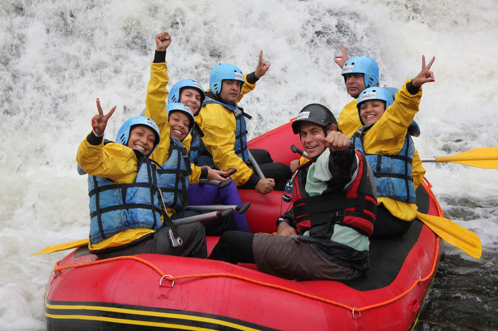
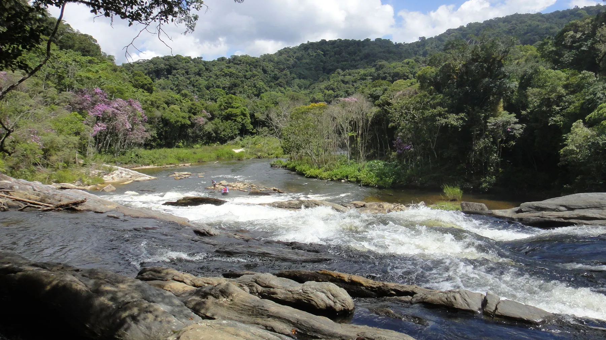

Início / Expedição 4 horas
Brazadão, 4 horas de rio.
Rio Paraibuna, Natividade da Serra — corredeiras, Floresta Atlântica e uma pausa na Praia do Funilzão.
O roteiro
Uma manhã inteira no ritmo do rio.
Além da aventura, a Floresta Atlântica: a descida combina corredeiras com trechos calmos para apreciar a paisagem.
- Recepção no Manacá da SerraPonto de encontro no km 59 da Rodovia Oswaldo Cruz, com estacionamento, sanitários e refeições.
- Traslado à beira do rioTransporte terceirizado adequado até o início da atividade, às margens do Rio Paraibuna.
- A descidaCorredeiras e remanso entre as belezas da Floresta Atlântica.
- Pausa na Praia do FunilzãoLanche servido à beira das águas transparentes do Paraibuna.
- RetornoEmbarque de volta ao ponto de encontro para a troca de roupa.
Acesso
São Luiz do Paraitinga fica a 200 km de São Paulo. Siga pela Rodovia Ayrton Senna/Carvalho Pinto ou pela Dutra, sentido Rio de Janeiro, até Taubaté; depois pela Rodovia Oswaldo Cruz, sentido Litoral Norte (Ubatuba – saída 111), até o km 59, no complexo Manacá da Serra.
Incluso
O que oferecemos
- Bote inflável para 5 passageiros
- Capacete, colete salva-vidas e remo
- Jaqueta de frio
- Instrutores habilitados na ABNT NBR 15.370
- Seguro saúde/viagem
- Lanche na Praia do Funilzão
Na bagagem
O que levar
- Par extra de tênis
- Camiseta, short e toalha
- Repelente e protetor solar
- Máquina fotográfica
- Protetor para óculos, para evitar quedas
Galeria
Do rio, em imagens.
Toque numa foto para ampliar.



Reservas
Sua manhã no Paraibuna.
Também servimos a versão de 6 horas, mais intensa, no Núcleo Santa Virgínia.